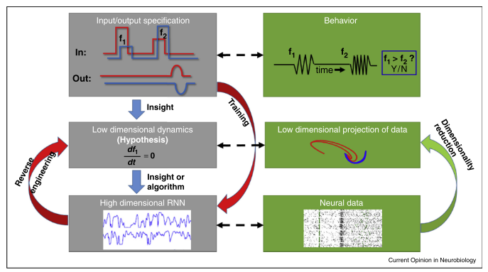
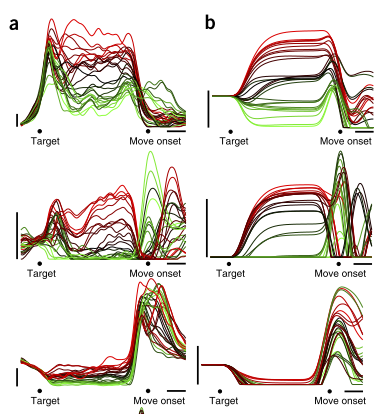
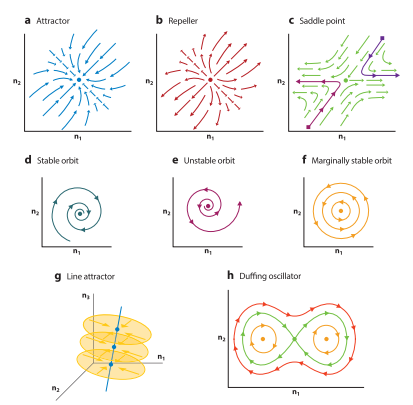

Some random thoughts about using RNN as a tool in neuroscience research.
Understanding the brain involves searching for a model mapping the neural activity to the behavior. This model could be qualitative. For instance, assigning each brain region with a behavior label. If a region shows a stronger firing rate compare with other regions, then the people is likely doing the corresponding label behavior. This is a basic idea of the theory of modularity.
Although the recurrent neural network isn’t as successful as the theory of in the prediction of behavior, it is a quantitative model based on a realistic, microbiological neural network. This allows RNN to answer more fundamental questions, such as what is learning, why some neurons have such intriguing firing patterns, etc. One common RNN model is the rate model, which could be described by the following equation [Barak, O., Curr. Opin. Neurol., (2017)]:
\begin{equation}
\frac{dx_i}{dt} = -x_i + \Sigma_j{J_{ij}\phi(x_j)} + \Sigma_k{B_{ik} u_k(t)}
\end{equation} Where $x_i$ is the input current of neuron $i$, $J$ is the structural connectivity, $\phi(x_i)$ is the firing rate of neuron $i$ , matrix $B$ is the external input current to neural $i$. We have good approximation functions for $\phi(x_i)$ , such as sigmoid function, ReLU, etc. Yet the structural connectivity and the external input remain largely undetectable.
Indeed, before solving the equation, one needs to fit the structural connectivity and external input to the neural data. This could be done in two ways. (See FIG. 1 and [Barak, O., Curr. Opin. Neurol., (2017)])
The first one is the bottom-up approach. One could construct a proper form of the equation based on low dimensional intuition. Or more broadly, one good build other forms of models, such as the Ising model, to capture the underlying dynamic system of the brain. The advantage of this bottom-up approach is that they have very clear biological meanings and have only a few parameters. For example, structural connectivity in the whole brain level detected from DTI is directly used as the structural connectivity J in equation (1), with a prefactor to present the global coupling strength. However, this approach often fails to have good fitness on the realistic neural data. This is reasonable considering the model has only a few parameters but would like to fit the much more complex human brain.
Another approach is the top-down approach. The behavior in equation (1) is often captured as a summary of the neural response ($\phi(x)$), e.g. . A Loss function is defined to measure the distance of the simulated behavior z and the experimental behavior data. This approach is pretty successful in predicting the behavior, yet does the fitted J and B really have realistic biological meanings, or just artifacts only for fitting the behavior data?
The answer to the above problem is directly comparing the simulated neural response ($\phi(x)$) to the biological neural response. For instance, on the local level, the spiking train of each neuron is recorded. Then the PSTH is compared to artificial neural response ($\phi(x)$) by SVCCA. Generally speaking, SVCCA selects a few principal components of two datasets (true neural response and $\phi(x)$). Then it tried to align those components using linear transform, but in most cases, even it tried hard, there are still some differences between the two sets of components. This difference then is used to measure the similarity between the two systems [Raghu, M. et al, NeurlIPS, (2017)]. In the content of this article, it would be the similarity of the brain and the fitted RNN. Fig 2 shows a successful example in the motor cortex and muscle activity. Please refer to detail in [Sussillo, D. et al, Nat. Neurosci, (2015)]. The most successful example at the local level I would say is the emergence of grid cell while the agent is performing navigation task [Cueva, C. J., & Wei, X. X., ICLR, (2018)].
Despite that $J$ could have poor biological meanings, this doesn’t stop researchers study the complex brain with RNN – a comparably simpler model. Although indeed we know little about RNN itself, replacing the biological brain with a model allows us to do much more virtual experiments. The common one is to linearize RNN around the slow points and fix points, see figure 3 and [Vyas, S. et al, (2020)].
Some Thoughts
In my perspective, the biggest challenge of using RNN is how to make it more biologically. This requires more theoretical work. How to shift novel analysis tools in Deep learning is another promising research direction. SVCCA could reveal the individual difference of two RNN with different initial conditions [Raghu, M. et al, NeurlIPS, (2017)]. If we can assign each people with one RNN, it is possible to find their individual or group differences. This should shed some light on medical research. We also need to go beyond linearizing RNN, more nonlinear analysis tools such as Riemann curvature, I believe could also provide precious information about the brain.